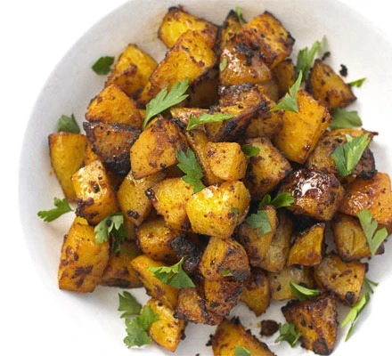

Spanish Potatoes

Description
These smoky, spiced potatoes are a great accompaniment for white fish or chicken
Ingredients
- 2 tbsp oil
- 3 tbsp tomato purée
- 1 tsp smoked paprika
- 800g potato, cut into small chunks
- 4 garlic cloves
- juice ½ lemon
- handful flat-leaf parsley leaves, roughly chopped
Method
- Heat oven to 180C/fan 160C/gas 4. Mix the oil, tomato purée and paprika together, then coat the potatoes thoroughly in it. Squash the garlic in its skin with the flat of a knife and place on a baking tray with the potatoes.
- Season well with salt and pepper, then roast for 40 mins, turning halfway through, until the potatoes have crisped up and are fluffy inside. Five mins before the end of cooking, sprinkle over the lemon juice and return to the oven. Serve with the parsley scattered over.
Reurn to main page